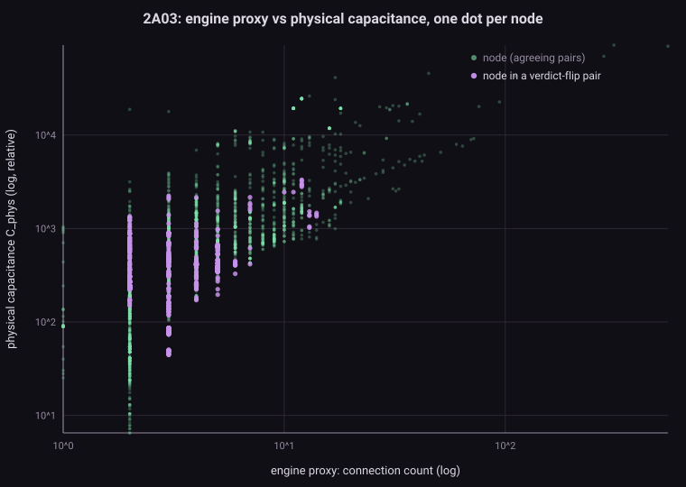
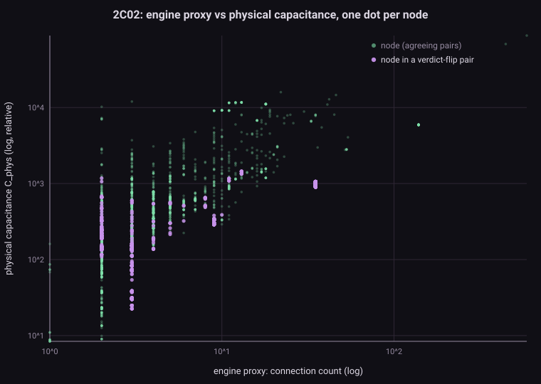
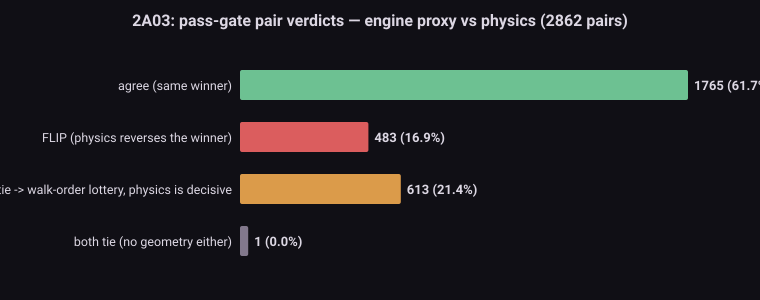
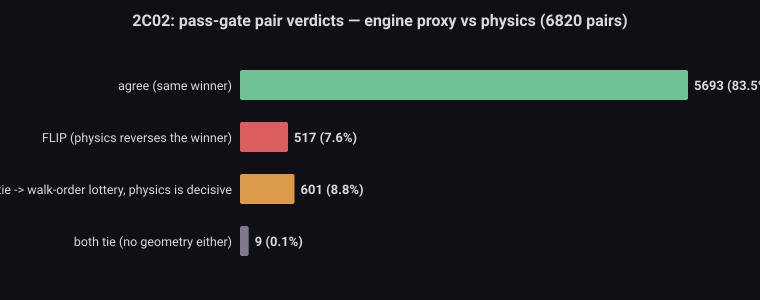
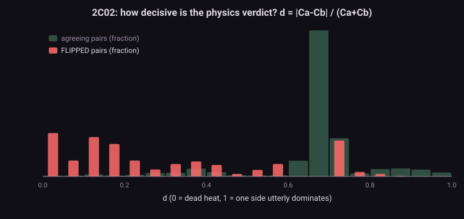

The problem問題 The engine's quietest rule引擎裡最安靜的一條規則
A switch-level simulator spends its life resolving groups: sets of nodes joined by conducting transistors. Each group takes one value, picked by a strict priority — a path to GND wins; else VCC or a pull-up wins; else an external driver; else… nothing is driving at all. That last case is a floating group: a puddle of charge cut off from every supply, remembering whatever it held last.
開關級模擬器一輩子都在解群:被導通電晶體連在一起的一坨節點。每群取一個值,按嚴格優先序 —— 有到 GND 的路就 GND 勝;不然 VCC / 上拉勝;不然外部驅動;再不然⋯⋯根本沒有人在驅動。最後這種就是浮接群:一灘被所有電源切斷的電荷,記著它最後的值。
Our engine (following Visual6502 → MetalNES) resolves it with one line of intent: “purely floating: largest-cap node wins.” But no engine in this family ever had capacitance. The stand-in, from WireCore.cs:
我們的引擎(承 Visual6502 → MetalNES)用一句話裁決它:「純浮接:電容最大的節點勝。」但這一族引擎從來沒有真的電容。頂替上場的,是 WireCore.cs 裡的:
NodeConnections[nn] = node.C1c2s.Count + node.Gates.Count; // the "capacitance" proxy
// GetNodeValue(), floating branch: the group takes the state of its max-connection node;
// ties fall through to graph-walk order — a structural accident, not physics.Counting wire attachments is not a crazy proxy — more terminals usually means more metal. But it is a proxy, and this study asks the obvious question nobody in the lineage ever checked: how often does it get the election wrong?
數線頭不是亂來的代理 —— 接點多通常銅線也多。但它終究是代理,而這份研究問一個這一族從來沒人查過的問題:它把選舉判錯的頻率,到底是多少?
Why it matters here. The M2 shim family — open-bus last transferred byte, OAM dynamic cells destroyed by a rendering-disable edge, the DL data latch — are all charge-storage behaviours patched around this exact abstraction. Before S1a replaces those shims with a real charge mechanism, we need to know how much of the floor is load-bearing.
為什麼重要。M2 shim 家族 —— open bus 的最後傳輸位元組、被關渲染邊沿毀掉的 OAM 動態 cell、DL 資料閂鎖 —— 全是繞著這個抽象打的電荷儲存補丁。S1a 要用真的電荷機制取代它們之前,得先知道這塊地板有多少是承重的。
The physics物理 Charge sharing: the biggest tank sets the level電荷分享:最大的水缸決定水位
When a pass gate closes between two floating nodes, their charge redistributes: the final voltage is the capacitance-weighted average V = (C₁V₁ + C₂V₂) / (C₁ + C₂). In a binary world that has a clean reading: the bigger capacitance drags the pair to its own remembered state. A 10:1 capacitance ratio is a landslide; 1.05:1 is a coin toss (and real silicon would settle mid-rail and let the next stage's threshold decide).
當 pass gate 在兩個浮接節點之間關合,電荷重新分配:最終電壓是電容加權平均 V = (C₁V₁ + C₂V₂) / (C₁ + C₂)。翻成二值世界就是一句話:電容大的一方,把整對拖向自己記住的值。電容比 10:1 是壓倒性勝利;1.05:1 是擲銅板(真矽會停在中間電位,讓下一級的門檻決定)。
And real node capacitance is not "number of wires". In this NMOS process it is dominated by thin gate oxide: every transistor gate hanging on a node contributes ~1.0 fF/µm² of its W×L, an order of magnitude above the wiring itself (metal ≈ 0.03, poly ≈ 0.04, diffusion ≈ 0.10 fF/µm² — Mead & Conway era priors). A short stub driving three gates can out-weigh a long lonely trace; a long bus with no listeners can out-weigh a busy little junction. Connection count sees none of this structure.
而真實的節點電容,不是「線的數量」。這個 NMOS 製程裡它由薄閘氧化層主導:掛在節點上的每一顆電晶體閘極,以它的 W×L 貢獻 ~1.0 fF/µm² —— 比佈線本身高一個數量級(metal ≈ 0.03、poly ≈ 0.04、diffusion ≈ 0.10 fF/µm²,Mead & Conway 時代的先驗)。一根驅動三個閘極的短樁,可以比一條孤單的長線更重;一條沒有聽眾的長匯流排,可以比一個熱鬧的小接點更重。連接數看不見這些結構。
The data資料 The die already carries its own answer晶粒身上本來就帶著答案
Everything needed is in the netlist files we already parse — and, until now, partly threw away:
需要的一切都在我們本來就解析的網表檔裡 —— 只是至今有一部分解析完就丟掉:
segdefs— every silicon polygon: node id, layer, vertex list. Shoelace formula → area per node per layer. This is the wiring capacitance.segdefs—— 每一塊矽多邊形:節點編號、層別、頂點序列。鞋帶公式 → 每節點每層面積。這是佈線電容。transdefs— every transistor: gate/c1/c2 node ids plus a geometry record[w, w, L, segs, W×L]. The W×L gate area, times ~1.0 fF/µm², is the dominant capacitance a node carries for every gate hanging on it. (Verified real data, e.g.t11891: W=54, L=6.)transdefs—— 每一顆電晶體:gate/c1/c2 節點編號,外加幾何紀錄[w, w, L, segs, W×L]。W×L 閘極面積 × ~1.0 fF/µm²,就是節點上每顆閘極貢獻的主力電容。(實測是真值,例如t11891:W=54、L=6。)nodenames— so the flipped elections come back with names (/bkg_pat_out,sq1_len0…), not just numbers.nodenames—— 讓翻盤的選舉帶著名字回來(/bkg_pat_out、sq1_len0⋯),不只是編號。
| Layer層別 | metal | poly | diffusion (sw / diode / rail) | gate oxide (per gate W×L)閘氧化層(每閘 W×L) |
|---|---|---|---|---|
| weight, relative fF/unit²權重(相對 fF/unit²) | 0.03 | 0.04 | 0.10 | 1.00 |
Units are relative — a verdict needs only ratios, so die coordinates never need converting to microns, and the priors only need to be right in proportion. The netlist data itself is CC-BY-NC-SA (Visual6502 project); the script takes paths to your own copies and nothing is vendored here.單位是相對的 —— 判決只需要比值,所以晶粒座標不必換算成微米,先驗只要比例正確。網表資料本身是 CC-BY-NC-SA(Visual6502 計畫);程式吃你自備檔案的路徑,本站不隨附資料。
The script程式 m2_charge_wins.py — re-running 9,682 electionsm2_charge_wins.py —— 重投 9,682 場選舉
One file, stdlib only (download). The recipe:
一個檔案,只用標準函式庫(下載)。配方:
- C_phys(node) = Σ polygon-area × layer-weight + Σ gate-area × 1.0 over every transistor gated by the node.
- C_phys(節點) = Σ 多邊形面積 × 層權重 + Σ 該節點當閘極的每顆電晶體閘面積 × 1.0。
- conn(node) = the engine's exact proxy, reproduced: c1/c2 attachments + gate attachments.
- conn(節點) = 原樣重現引擎代理:c1/c2 接點數 + 閘極接點數。
- The electorate: every pass-gate pair — a transistor whose two channel terminals are both signal nodes. These are precisely the 2-node floating groups the engine's floating branch exists for (measured mean group size ≈ 1.4 nodes, so pairs are the dominant class).
- 選民名冊:每一個 pass-gate 節點對 —— 兩個通道端都是訊號節點的電晶體。這正是引擎浮接分支要處理的 2 節點浮接群(實測群平均 ≈ 1.4 節點,節點對就是最大宗)。
- The election: for each pair, compare the engine's winner (more connections; equal = walk-order lottery) with the physics winner (bigger C_phys; decisiveness d = |C₁−C₂|/(C₁+C₂)).
- 開票:每一對,比較引擎的贏家(連接數多者;相等 = 走訪順序抽籤)與物理的贏家(C_phys 大者;決定性 d = |C₁−C₂|/(C₁+C₂))。
python m2_charge_wins.py --segdefs visual2a03-segdefs.js --transdefs visual2a03-transdefs.js \
--nodenames visual2a03-nodenames.js --label 2A03 --outdir out/
# → console report + m2_2A03_summary.json + 3 SVG figuresResults結果 A thousand flipped verdicts, twelve hundred coin tosses一千場翻盤,一千二百次擲銅板
| transistors電晶體 | pass-gate pairspass-gate 對 | agree一致 | FLIP翻盤 | engine tie (lottery)引擎平手(抽籤) | Spearman ρ | |
|---|---|---|---|---|---|---|
| 2A03 (CPU+APU) | 10,916 | 2,862 | 1,765 · 61.7% | 483 · 16.9% | 613 · 21.4% | 0.68 |
| 2C02 (PPU) | 16,872 | 6,820 | 5,693 · 83.5% | 517 · 7.6% | 601 · 8.8% | 0.56 |
| both dies兩晶粒合計 | 27,788 | 9,682 | 7,458 · 77.0% | 1,000 · 10.3% | 1,214 · 12.5% | — |
Read that middle column honestly: one in ten elections comes out backwards under physics, and another one in eight is a tie the engine settles by the order a graph walk happened to visit nodes — the same "structural lottery" family (D-class) that made instrument-probing and netlist patches so hazardous in the accuracy campaigns.
誠實地讀中間那欄:每十場選舉就有一場在物理下是反的,另外每八場有一場是平手 —— 由圖走訪剛好先碰到誰來裁決,正是精度戰役裡讓探針與網表補丁如此危險的那個「結構樂透」家族(D 類)。





Named casualties有名有姓的受害者
- 2C02 ·
/bkg_pat_outvs its sprite-fetch mux twin (d=0.90) and/spr_pat_outvs the 8×16 buffer mux (d=0.77) — the background/sprite pattern data paths, one circuit away from the BGSerialIn battlefield. - 2C02 ·
/bkg_pat_outvs 它的精靈取圖 mux 鄰居(d=0.90)、/spr_pat_outvs 8×16 緩衝 mux(d=0.77)—— 背景/精靈 pattern 資料路徑,離 BGSerialIn 戰場只有一個電路的距離。 - 2A03 ·
sq0/sq1/tri/noi_len0— all four APU length-counter LSBs lose their elections to the shared load bus (d=0.72), a structured, repeating flip across an entire register file. - 2A03 ·
sq0/sq1/tri/noi_len0—— 四個 APU 長度計數器 LSB 全部把選舉輸給共用載入匯流排(d=0.72),整排暫存器檔案結構性、重複性地翻盤。 - Lotteries with a right answer:
/attrib_buf4vs an unnamed junction (physics 88% decisive), the sprite comparator twins+vpos_minus_spr_d2vs++vpos_minus_spr_d2(83%) — the engine flips a coin where the die has a firm opinion. - 其實有正解的抽籤:
/attrib_buf4vs 無名接點(物理 88% 篤定)、精靈比較器孿生+vpos_minus_spr_d2vs++vpos_minus_spr_d2(83%)—— 晶粒有明確意見的地方,引擎在擲銅板。
So what所以呢 The staged road from census to shim retirement從普查到 shim 退役的分段路
This census is evidence and parameters, not yet a mechanism. The road it opens is deliberately staged — each step banked and verified before the next (the project's standing rule: a shim removed without full verification didn't happen):
這份普查是證據與參數,還不是機制。它打開的路刻意分段 —— 每一步入帳並驗證過,才走下一步(專案鐵律:拔了 shim 沒驗證 = 沒發生):
- 1 · (done, this page) Static census: where the arbitration rule is physically wrong, with parameters (C_phys per node) as a by-product.
- 1 ·(本頁,已完成)靜態普查:仲裁規則物理上錯在哪,順帶產出參數(每節點 C_phys)。
- 2 · Dynamic firing count: instrument a real run, count how often each flipped/lottery pair actually floats together. A flip that never fires is a curiosity; one that fires every frame is a bug in waiting.
- 2 ·動態開火統計:儀器化跑真 ROM,數每個翻盤/抽籤對實際一起浮接的頻率。從不開火的翻盤是趣聞;每幀都開火的是待爆的雷。
- 3 · S1A engine: a load-time
NodeCapacitancetable (this script's formula) behind a switch; the floating branch compares C_phys instead of connection count. S1's golden checksum is untouched; S1A re-baselines its own (an arbitration change is a checksum change by design). - 3 ·S1A 引擎:載入期
NodeCapacitance表(本程式的公式)藏在開關後;浮接分支改比 C_phys 而非連接數。S1 金 checksum 不動;S1A 重定自己的基準(改仲裁本來就會改 checksum)。 - 4 · Then, and only then, re-audit the M2 shim family (open-bus last-byte, OAM blank-edge, DL window): whatever the mechanism now reproduces naturally, retire — one shim at a time, each behind the full gate: golden checksum with the mechanism off, AC 141/141 and the 147-ROM regression with it on.
- 4 ·然後才重審 M2 shim 家族(open-bus last-byte、OAM 關渲染邊沿、DL 窗):機制自然重現的部分,一顆一顆退役 —— 每顆都過完整驗證閘:機制關 = 金 checksum 不變;機制開 = AC 141/141 + 147 回歸不退步。
Honest limits誠實極限 What this census cannot say這份普查說不了的事
- Pairs only. Groups larger than two (chained pass gates) are enumerated but not adjudicated here; the mean group is ≈1.4 nodes, so pairs cover the dominant class — the tail comes later.
- 只裁節點對。大於兩節點的群(pass gate 串鏈)這裡只列舉不開票;群平均 ≈1.4 節點,節點對已涵蓋最大宗 —— 尾巴之後處理。
- Relative priors. Layer weights are era-typical, not fab data; verdicts are robust to them (most flips have d>0.3, and gate-oxide dominance is an order-of-magnitude fact), but individual near-ties could swap.
- 先驗是相對值。層權重是時代典型值,不是晶圓廠資料;判決對權重相當穩健(多數翻盤 d>0.3,閘氧化層主導是數量級事實),但個別接近平手的對可能互換。
- Static ≠ fired. A flipped pair matters only when that pair actually floats together at runtime with different remembered states. Step 2 (dynamic counting) exists precisely to rank this.
- 靜態 ≠ 開火。翻盤對要在執行期真的一起浮接、而且兩邊記的值不同,才有實際影響。第 2 步(動態統計)就是為了排這個序。
- 2D extraction. No fringe, no coupling, no contact resistance — irrelevant at verdict granularity, fatal if you wanted picoseconds (we don't; that's M3's carefully-bounded problem).
- 2D 萃取。沒有 fringe、耦合、接觸電阻 —— 在判決粒度無關緊要,要算皮秒才致命(我們不算;那是 M3 小心圈界的問題)。